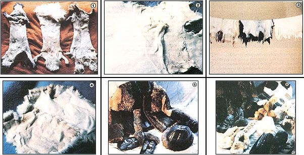

Photos by the Author
[1] Here are some cased ? or sleeve-pulled? green rabbit hides. [2] After the skins have soaked for two days in the first tanning solution, they are fleshed: that is, the fatty tissue and meat are removed. [3] The furs go back into a second tanning, after which they are washed and hung up to dry. [4] ""Breaking the skin"" involves taking a barely damp pelt (left) and stretching it to obtain a soft, flexible skin (right) [5 and 6] Fur items made out of home-tanned rabbit pelts. The jacket is based on a purchased pattern.